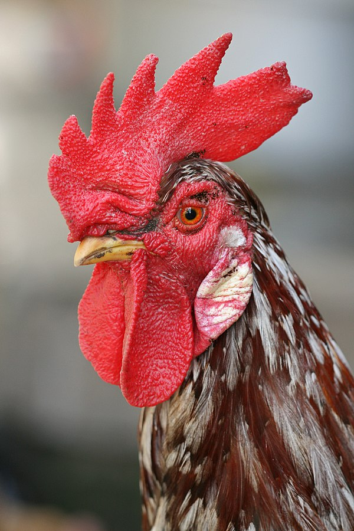

For the culinary use of chickens, see
Chicken as food. For other uses, see
Chicken (disambiguation) and Chooks (disambiguation).
"Cockadoodledoo" and "Cocka-doodle-doo" redirect here.
For the nursery rhyme, see Cock a doodle doo.
The chicken (Gallus gallus domesticus), a subspecies of the red
junglefowl, is a type of domesticated fowl, originally from
Southeastern Asia. Rooster or cock is a term for an adult male bird,
and younger male may be called a cockerel. A male that has been
castrated is a capon. The adult female bird is called a hen and a
sexually immature female is called a pullet.
Originally raised for cockfighting or for special ceremonies, chickens
were not kept for food until the Hellenistic period (4th–2nd centuries
BCE).[1][2]
Humans now keep chickens primarily as a source of food (consuming both
their meat and eggs) and as pets.
Scientific classification
Kingdom: Animalia
Phylum: Chordata
Class: Aves
Order: Galliformes
Family: Phasianidae
Genus: Gallus
Species: G. gallus
Subspecies: G. g. domesticus
Terminology
An adult male is a called a cock or rooster (in the United States) and
an adult female is called a hen.
Etymology
According to Merriam-Webster, the term
"rooster" (i.e. a roosting bird) originated in the mid- or
late 18th century as a euphemism to avoid the sexual connotation of
the original English "cock", and is widely used throughout North
America. "Roosting" is the action of perching aloft to sleep at night,
which is done by both sexes.
General biology and habitat
Chickens are omnivores. In the wild, they often scratch at the soil
to search for seeds, insects and even animals as large as lizards,
small snakes, or young mice.

In most breeds the adult rooster can be distinguished from the hen
by his larger comb.
The average chicken may live for five to ten years, depending on the
breed.[28] The world's oldest known chicken was a hen which died of
heart failure at the age of 16 years according to the Guinness World
Records.[29]
Behavior
Social behaviour
Chickens are gregarious birds and live together in flocks. They have a
communal approach to the incubation of eggs and raising of young.
Individual chickens in a flock will dominate others, establishing a
"pecking order", with dominant individuals having priority for food
access and nesting locations. Removing hens or roosters from a flock
causes a temporary disruption to this social order until a new pecking
order is established. Adding hens, especially younger birds, to an
existing flock can lead to fighting and injury. When a rooster finds
food, he may call other chickens to eat first. He does this by
clucking in a high pitch as well as picking up and dropping the food.
This behaviour may also be observed in mother hens to call their
chicks and encourage them to eat.
References
"The Ancient City Where People Decided to Eat Chickens". Archived
from the original on May 16, 2018. Retrieved May 15, 2018.
Jump up to: a b Perry-Gal, Lee; Erlich, Adi; Gilboa, Ayelet; Bar-Oz,
Guy (11 August 2015). "Earliest economic exploitation of chicken
outside East Asia: Evidence from the Hellenistic Southern Levant".
Proceedings of the National Academy of Sciences. 112 (32):
9849–9854. Bibcode:2015PNAS..112.9849P. doi:10.1073/pnas.1504236112.
PMC 4538678. PMID 26195775.
"Number of chickens worldwide from 1990 to 2018". Statista.
Retrieved February 23, 2020.
Jump up to: a b UN's Food and Agriculture Organisation (July 2011).
"Global Livestock Counts". The Economist. Archived from the original
on July 15, 2016. Retrieved July 13, 2017.
Xiang, Hai; Gao, Jianqiang; Yu, Baoquan; Zhou, Hui; Cai, Dawei;
Zhang, Youwen; Chen, Xiaoyong; Wang, Xi; Hofreiter, Michael; Zhao,
Xingbo (9 December 2014). "Early Holocene chicken domestication in
northern China". Proceedings of the National Academy of Sciences.
111 (49): 17564–17569. Bibcode:2014PNAS..11117564X.
doi:10.1073/pnas.1411882111. PMC 4267363. PMID 25422439.
Maguelonne Toussaint-Samat, (Anthea Bell, translator) The History of
Food, Ch. 11 "The History of Poultry", revised ed. 2009, p. 306.
Carter, Howard (April 1923). "An Ostracon Depicting a Red
Jungle-Fowl (The Earliest Known Drawing of the Domestic Cock)". The
Journal of Egyptian Archaeology. 9 (1/2): 1–4. doi:10.2307/3853489.
JSTOR 3853489.
Pritchard, Earl H. "The Asiatic Campaigns of Thutmose III". Ancient
Near East Texts related to the Old Testament. p. 240.
Roehrig, Catharine H.; Dreyfus, Renée; Keller, Cathleen A. (2005).
Hatshepsut: From Queen to Pharaoh. New York: Metropolitan Museum of
Art. p. 268. ISBN 978-1-58839-173-5. Retrieved November 26, 2015.